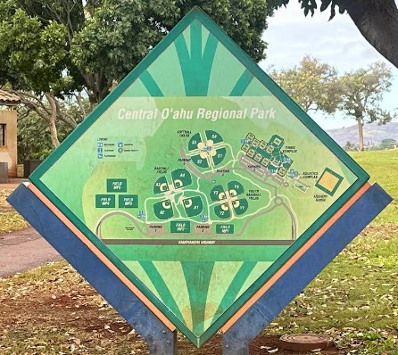
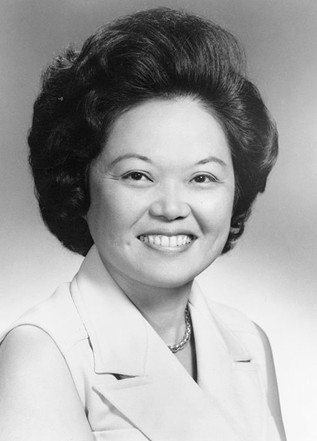

Patsy T. Mink Central Oʻahu Regional Park (CORP)

Patsy T. Mink Central Oʻahu Regional Park, commonly called CORP, sits in the middle of the island, both geographically and symbolically. The park’s long name reflects its purpose: a large, shared public space serving Central Oʻahu, drawing people from Waipahu, Mililani, Wahiawā, and beyond. The name carries the legacy of one of Hawaiʻi’s most significant, and often glossed over political figures.
The sprawling, 269-acre park was opened in 2001 with major facilities completed in 2003. It includes tennis courts, an aquatic center, baseball fields, softball fields, multipurpose fields and an archery range. Patsy T. Mink Central Oahu Regional Park regularly hosts youth sports including swimming, soccer, baseball, football, archery, tennis and of course…pickleball. It also serves as the home field for Hawaiʻi Pacific University’s baseball team and Chaminade University’s softball team. As Central Oʻahu grew rapidly in the decades surrounding its construction, the park became a critical outdoor space for recreation across age groups and communities.
In 2007, the park was renamed in honor of Patsy Takemoto Mink, a trailblazing congresswoman who represented Hawaiʻi for decades and helped shape modern civil rights law. Mink was the first woman of color elected to the U.S. House of Representatives and a principal author of Title IX, the landmark legislation prohibiting sex-based discrimination in federally funded education. While Title IX is often associated with athletics, its impact extends far beyond sports, reshaping access to education and opportunity. Naming a regional park after Mink ties a place of everyday recreation to a broader national legacy rooted in equity and public service.

Before the renaming, the park was known simply as Central Oʻahu Regional Park, a functional name describing location and use. The addition of Mink’s name did not change how people use the space. Families still gather for soccer games, picnics, community events, and weekend practices. It did change what the park represents, adding a layer of meaning to a place already woven into daily life of the communities it serves.
That coexistence of formal and informal naming is common, where official names regularly sit alongside the names people actually use. Over time, whether Mink’s full name is spoken aloud or abbreviated, the association between the place and her legacy continues to settle.
Patsy T. Mink CORP is not a monument. It is an active, living space. Its name connects policy to place, reminding park users that public spaces are shaped not just by land and infrastructure, but by the people whose work expanded who gets to participate in them.